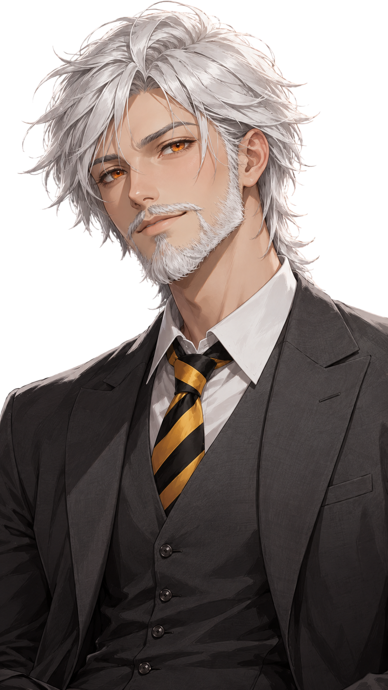
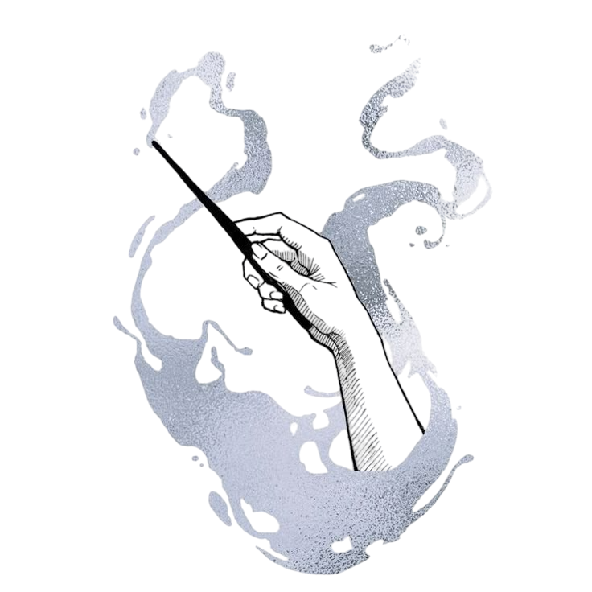
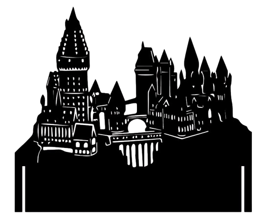
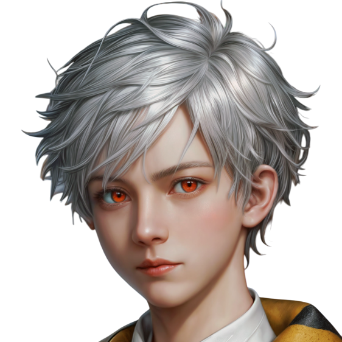
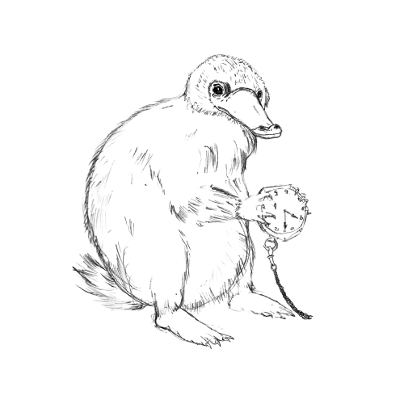
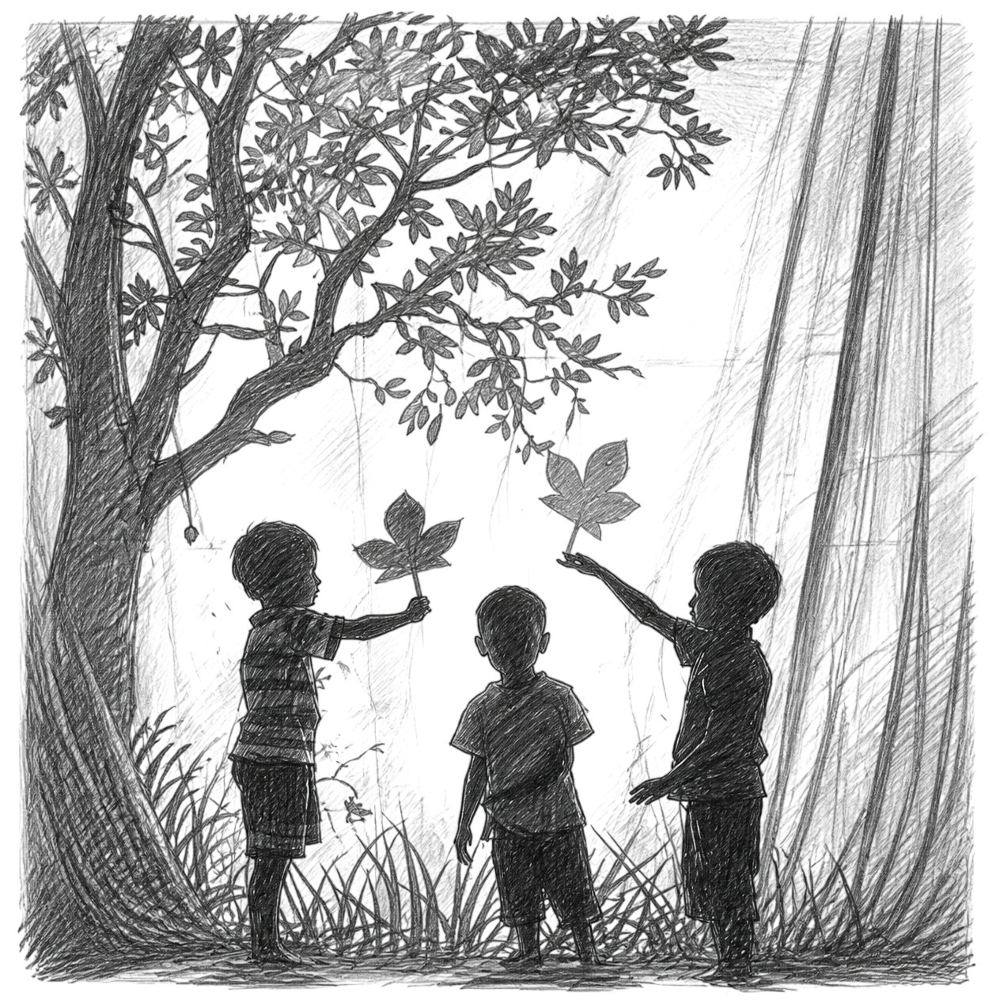
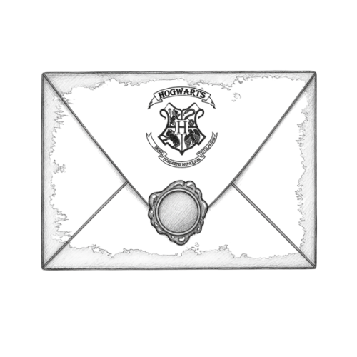
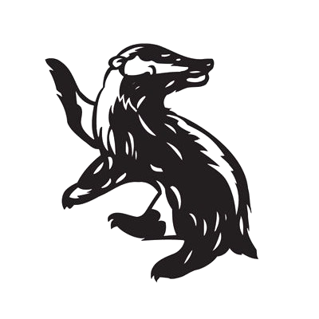
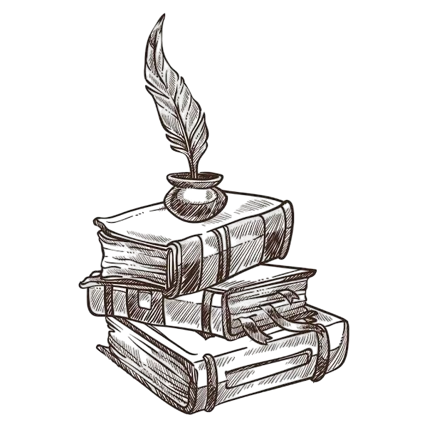
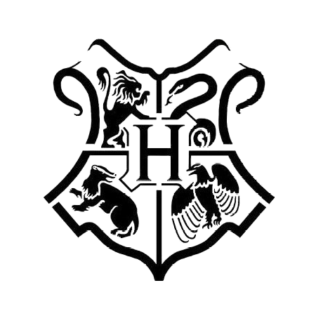

Afin de faciliter la compréhension de l'arborescence de cette famille, Veuillez cliquer sur l'image pour accéder à l'arbre généalogique de la famille Hogoki.

Nom : Hogoki.
Prénom : Girah.
Origines Anglo--Franco-Japonais.
Age : 27 Ans.
Date de Naissance : 12 Mars 1866.
Matières : Soins aux Créatures Magiques / Histoire de la Magie / Sortilèges .

Bois de Baguette : Bois de Séquoia.
Coeur de Baguette : Plume de phénix.
Taille de Baguette : 35 cm.
Rigidité de Baguette : Légèrement fléxible.
(Basés sur les résultats du Test Wizarding World)

Apparence Physique :
Il arbore des cheveux blancs, couleur qu'il tient de sa Mère, mi-longs qu'il coiffe principalement vers l'arrière, une barbe soignée, ainsi que des yeux perçants d'une couleur marron aux nuances légèrement rougeâtres qu'il tient de son Père.
Il mesure 1 m 98 et possède une carrure aux épaules larges, tout en conservant une allure détendue.
Son style vestimentaire est simple, confortable, avec une subtile touche d'élégance. Selon lui, un professeur doit garder une certaine prestance face à ses élèves, sans toutefois paraître intimidant.

Personnalité :
C’est un homme ouvert d’esprit, chaleureux et attentif. Il essaye toujours d'être à l'écoute et surtout d'instaurer un climat de confiance en classe. Il exige un certain sérieux tout en accordant à ses élèves des moments détentes.
Doté d’un côté taquin, il aime glisser occasionnellement une petite plaisanterie pour amuser la galerie et rendre les situations plus agréables. Et dans le privé il est du genre bon blagueur. Ou plutot il fait trop de blagues.
D'un naturel bon vivant et jovial, il estime que la vie se doit d'être vécue avec le sourire, qu'il faut découvrir ce monde passionnant, prendre le temps de trouver sa place, et surtout bien manger.
Philosophe dans l’âme, il privilégie les discussions approfondies et respectueuses, stimulant ainsi la réflexion et l’ouverture d'esprit.
Protecteur, il place le bien-être et la sécurité de ses élèves au centre de ses priorités. Tourné vers l’avenir, il ne cache pas les grands espoirs qu’il place en ceux qu’il considère comme le Futur de la communauté magique, ainsi qu'il aime à le répéter.
Il sait néanmoins se montrer ferme lorsque cela est nécessaire, considérant les punitions comme un moyen juste et efficace pour faire comprendre leurs erreurs aux élèves, sans jamais en abuser. Il privilégiera toujours des punitions fastidieuses, comme le nettoyage de la salle des trophés à la main, à une perte de points.

Compétences :
- Autoritaire : Il sait s’imposer auprès des élèves récalcitrants afin de leur faire comprendre leurs erreurs.
- Juste : Il ne privilégie aucun élève en particulier, et applique toujours des sanctions appropriées.
- Adaptable : Il ajuste sa méthodologie selon les besoins spécifiques de chacun, pouvant également dépanner ses collègues si nécessaire.
- Ouvert d'esprit : Il accueille favorablement les critiques constructives et l’argumentation, estimant qu'il apprend davantage de ses erreurs que de ses réussites.
- Attentif : Il se montre toujours disponible et prêt à écouter quiconque ayant besoin de soutien ou de dialogue.
- Accessible : Bien qu'il maintient le respect demandés entre Professeurs et Élèves, il souhaite montrer qu''il est loin d'être difficile à approcher. Sa main est toujours tendue à qui veut la prendre.

Objectifs :
- Offrir un environnement chaleureux, détendu, sain et propice à l'apprentissage ainsi qu'à l'épanouissement des élèves.
- Assurer un suivi pédagogique de qualité, en veillant à ce que chaque élève progresse à son rythme et atteigne son plein potentiel.
- Transmettre ses connaissances et sa passion pour la magie, en inspirant ses élèves à explorer et à approfondir leur compréhension du monde magique et des créatures qui le peuplent.
- Fournir un soutien moral et des conseils qu'il espère être utile à ceux qui lui en demanderont.
- Maintenir une discipline efficace au sein de sa classe, ou même de la maison dont il pourrait avoir la charge.

Histoire :
Cette histoire possède un passé. Vous le trouverez dans les section concernant "L'ancêtre" et "Les Hogoki".
L'enfance

Girah Hogoki est né un 12 mars, par un après-midi ensoleillé, au sein même de cette maison que ses parents, Olivier et Aurore Hogoki, avaient construite de leurs propres mains. Dès son plus jeune âge, il fut un enfant plein d’énergie, courant partout et avide de découvrir le monde fantastique de la magie. Il grandit entouré de créatures magiques : des niffleurs avec lesquels il jouait à cache-cache, un fléreur qui le suivait souvent pour veiller à ce qu’il ne se blesse pas, un hippogriffe auprès duquel il lui arrivait de s’endormir, ou encore des Boursouf qui l’amusaient et le chatouillaient. Toutes ces créatures appartenaient à sa mère et, à ses yeux, elles constituaient autant de membres de sa famille.

Son père étant professeur, Girah reçut directement son éducation à la maison. Il y apprit à lire, à écrire, à compter, ainsi que de nombreuses autres disciplines adaptées à son âge. Olivier prenait également plaisir à lui raconter des histoires sur leur communauté magique, des récits dont Girah était particulièrement friand. De son côté, sa mère lui transmit de solides valeurs morales, telles que le respect, la compassion et la patience. Elle lui inculqua également un amour profond pour les créatures magiques, ainsi que l’importance de prendre soin d’elles.

Cependant, son enfance ne se résumait pas uniquement au monde magique. Il avait également deux cousins moldus, des jumeaux nés de la sœur d’Olivier, avec lesquels il partagea des souvenirs inoubliables. Girah leur rendait régulièrement visite chez leur mère, notamment durant les vacances d’été. Il pouvait alors profiter de tout ce qu’un enfant de son âge pouvait rêver de faire : accumuler les bêtises, rentrer couvert de boue, courir à travers les bois ou encore se battre avec des bâtons en guise d’épées. En somme, Girah connut une enfance simple et joyeuse, partagée entre les merveilles du monde magique et les aventures ordinaires de l’enfance moldue.
La Scolarité

Comme tout jeune sorcier approchant de ses onze ans, Girah reçut une lettre très particulière, livrée par hibou. Poudlard l’attendait, et tout comme ses parents avant lui, il allait avoir la chance d’étudier et de s’épanouir dans l’une des plus prestigieuses écoles de sorcellerie au monde. Ses parents lui en avaient tant parlé, sans doute parce qu’il ne cessait de poser des questions à son sujet, qu’il comptait les jours jusqu’à sa première rentrée. Autant dire que les achats de ses fournitures sur le Chemin de Traverse furent particulièrement mouvementés ! Il fit même une petite crise pour emmener avec lui le vieux fléreur de sa mère. Heureusement, il finit par se laisser consoler grâce à son tout premier animal, rien qu’à lui : un hibou qu’il nomma Archimède.

Et ainsi arriva le grand jour, celui du départ et des premiers adieux. Pour la première fois, Girah allait vivre une véritable aventure loin de sa famille. Et quelle aventure ! Il fut réparti à Poufsouffle, comme ses parents avant lui, et éprouva une immense fierté à l’idée de porter les couleurs de sa maison. Il passa ainsi sept années au sein de ce magnifique établissement. Travailleur et appliqué, il savait qu’il devait obtenir de bons résultats s’il voulait profiter pleinement de ses vacances plutôt que de subir les interminables séances de révisions imposées par son père. Aux BUSE comme aux ASPIC, il obtint d’excellents résultats en Soins aux créatures magiques, en Histoire de la magie et en Sortilèges. Avec des notes tout à fait honorables dans les autres matières, il acheva sa scolarité à Poudlard avec la mention Optimale.

La fameuse question que beaucoup se posent après avoir quitté l’école — « Et maintenant, que dois-je faire ? » — ne fut pas bien difficile à résoudre pour Girah. Il voulait y retourner. Il voulait y vivre. Il voulait y enseigner. Il décida donc de suivre les traces de son père en entreprenant les études nécessaires pour devenir professeur. Mais, fidèle à l'héritage de sa mère, il souhaitait également approfondir ses connaissances sur les créatures magiques. Il consacra ainsi plusieurs années à voyager à travers le monde, à découvrir de nouvelles espèces et à multiplier les stages pour enrichir son expérience. Cinq années de formation, de voyages et d'apprentissage lui permirent finalement de se préparer à franchir la dernière étape : envoyer sa candidature à Poudlard.
La carrrière
Après avoir envoyé sa candidature en 1889, Girah resta quelque temps auprès de sa mère, l’aidant à s’occuper des créatures magiques qu’elle accueillait pour les soigner. Il lui arrivait également de donner des cours à domicile aux enfants de familles sorcières. Puis, au bout de trois mois, il reçut enfin une réponse : un poste de professeur allait bientôt se libérer à Poudlard. Le titulaire souhaitait former son successeur avant de prendre sa retraite, et Girah fut choisi pour lui succéder. Sa joie fut alors bien plus grande encore que lorsqu’il avait reçu sa lettre d’admission. Cette fois-ci, il ne venait pas pour étudier, mais pour travailler, s’installer et, qui sait, passer bien plus de sept années entre ces murs.
La rentrée suivante, 1890 marqua donc le retour de Girah à Poudlard, non plus en tant qu’élève, mais en tant que membre du personnel. Sous la tutelle de son futur prédécesseur, il passa sa première année à observer, assister et apprendre, découvrant bien davantage qu’il ne l’avait espéré. Il trouvait particulièrement amusant de se retrouver de l’autre côté du pupitre ! Il eut également l’occasion d’accompagner d’autres professeurs, notamment dans les trois matières qu’il espérait un jour enseigner. Puis vint sa deuxième année, et avec elle le moment tant attendu : son mentor prit sa retraite et Girah lui succéda officiellement.

Lors de cette terrible année 1891, Girah ne prit part à aucune action majeure contre Ranrok et ses alliés, préférant avant tout assurer la sécurité de ses élèves. Il fut donc particulièrement soulagé lorsque ces événements prirent fin, même s’il ignorait précisément comment tout cela s’était achevé.
Depuis, le jeune professeur poursuit son rêve en enseignant à Poudlard, ce château qu’il affectionnait déjà tant lorsqu’il était élève. Mais il n’est pas le seul à profiter des lieux : son petit compagnon, un niffleur particulièrement espiègle nommé « Niffly », a lui aussi tendance à s’y promener. Et au vu de son intérêt pour les objets brillants, certains trésors du château pourraient bien se retrouver entre ses petites pattes !
Retour